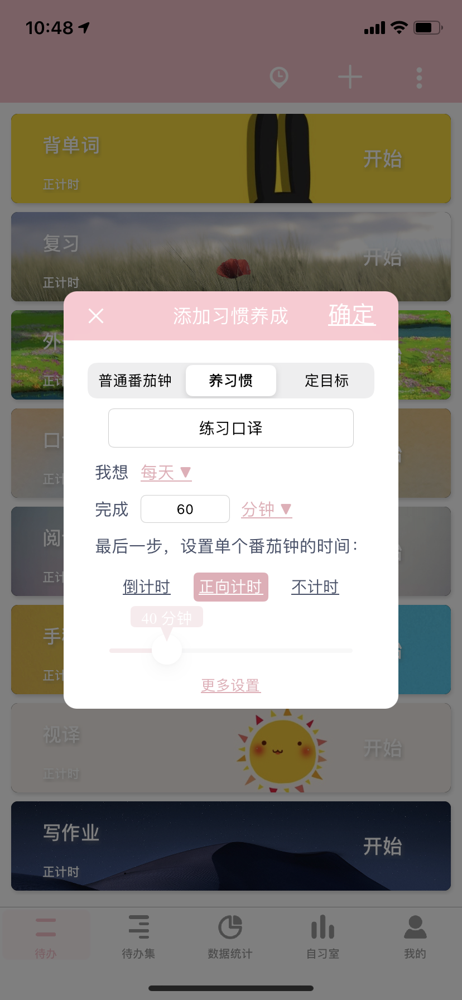
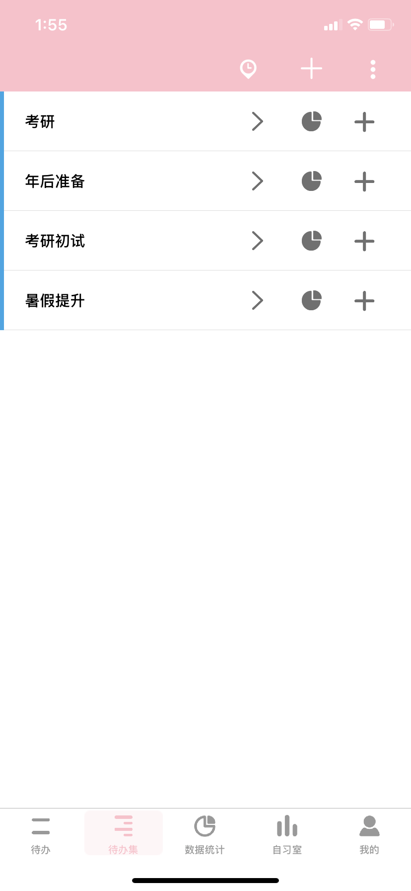
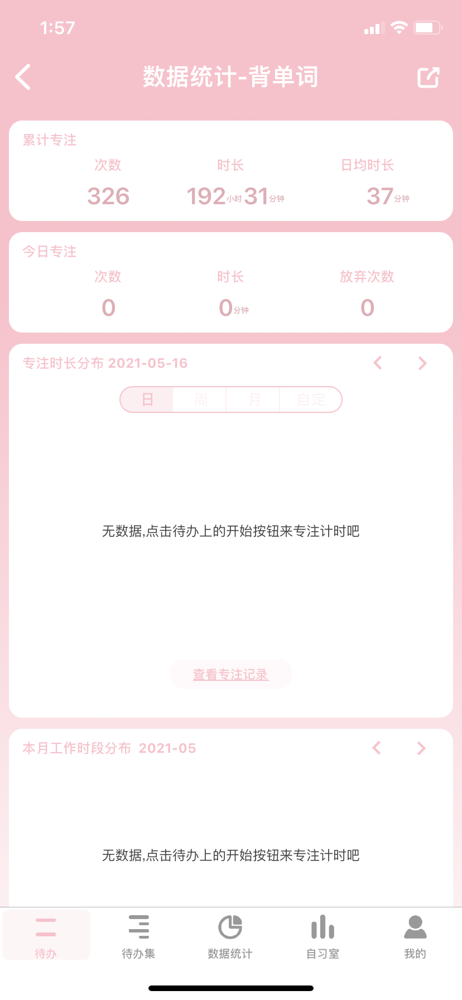
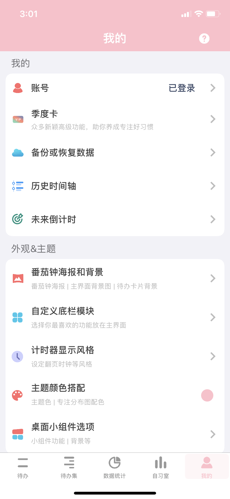

待办
点击右上角的「+」符号，即可添加「待办」事项，其中包括了三种模式：
普通番茄钟：基本番茄钟使用；
定目标：能够设置 deadline，也能够设置我们完成量，量单位甚至可以自定义；
养习惯：完成频率和完成量都可以实现自定义；
番茄 ToDo 吸收了一万小时理论和习惯养成理论，我们可以将番茄工作法和「计划」或「习惯」相结合。用数据量化我们的行为，让我们的「努力」看得见。


待办集
「待办集」和「待办」的页面作用基本一致。点击右上角的加符号，即可添加新的「待办集」。
「待办集」里面的每一个待办事宜的计时顺序可排列顺序进行的，只需点击「小齿轮」符号，我们就可以选择成为连续执行待办。
建议使用方式：将它当做是一个文件夹，将同一主题的任务放在这里。也可建立一个月份的待办集，然后将这个月完成的任务移到这里，以便日后总结归纳。
统计数据
统计数据是为了更好审视我们自己的时间，能够知道我们一天下来，最高效的工作 / 学习时间在哪里，并且知道自己的专注能力，可以进行更合理时间安排。
番茄 ToDo 能够通过用户使用番茄个数和完成番茄时间情况，给出一个大数据，其中的数据包括当日数据、番茄时间分布、本月最佳工作时段、月度时间统计等，甚至还有本月打断原因分布数据。


我的
点击「历史记录时间轴」我们可以看到一个月历式的打卡情况，如右图所示，点击右上角的分享符号，同样可以出现打卡情况图片。
「未来计划表」是针对重要日期的倒计时，将 deadline 放在眼前，我们才会更加有动力完成任务。
像是工作背景音乐、自定义番茄格言和番茄钟背景海报设置等，都可以在此找到。